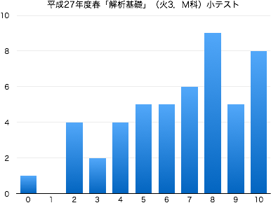
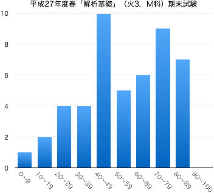

連絡事項
- 7/29：この授業は終了しました．期末試験の解答・結果についてはここを参照してください．
-
Twitter #15SbapM を参照してください．
-
4/3：このページを公開しました．
授業の目的
三角関数は振動・波動・回転のように繰り返す現象と特に相性がよい。そのため、自然科学のみならず工学のさまざまな分野で三角関数を用いた記述は頻出する。
数学をはじめとする専門科目をスムーズに理解するために、三角関数について学習する。基礎的な計算技法に習熟するとともに、三角関数のグラフや周期性についても理解する。
達成目標
- 三角比の意味を理解し、図形の計量に応用することができる。
- 弧度法の定義を理解し、図形の計量に応用することができる。
- 三角関数の定義や性質を理解し、グラフの概形を描くことができる。
- 三角関数の基本的な公式を理解し、それを利用して三角関数の値を求めることができる。
- 三角方程式・三角不等式の解を求めることができる。
これまでの授業と今後の予定
| 第1回 |
4月 |
14日（火） |
ガイダンス |
| 第2回 |
|
21日（火） |
三角比 第6章 §1.1 ，三角比の相互関係 第6章 §1.2 [II] |
| 第3回 |
|
28日（火） |
三角比の相互関係 第6章 §1.2 [III] ，鈍角の三角比 第6章 §1.3 |
| 第4回 |
5月 |
12日（火） |
三角形への応用（三角形の面積，正弦定理，余弦定理） 第6章 §1.4 |
| 第5回 |
|
19日（火） |
一般角と弧度法 第6章 §2.1 |
| 第6回 |
|
26日（火） |
円弧の長さ，おうぎ形の面積 第6章 §2.1 ，三角関数の定義とその性質 第6章 §2.2 |
| 第7回 |
6月 |
2日（火） |
三角関数の性質 第6章 §2.2 |
| 第8回 |
|
9日（火） |
小テスト（問題 | 解答 | 得点分布） |
| 第9回 |
|
16日（火） |
三角関数のグラフ 第6章 §2.3 |
| 第10回 |
|
23日（火） |
加法定理 第6章 §3.1 |
| 第11回 |
|
30日（火） |
2倍角の公式，半角の公式 第6章 §3.2 |
| 第12回 |
7月 |
7日（火） |
加法定理の応用（三角関数の合成） 第6章 §3.3 |
| 第13回 |
|
14日（火） |
加法定理の応用（積と和の公式） 第6章 §3.3 ，三角方程式 第6章 §3.4 |
| 第14回 |
|
16日（木） |
三角不等式 第6章 §3.4 ，これまでのまとめ・問題演習 |
|
|
28日（火） |
期末試験（問題 | 解答 | 得点分布） |
教科書・参考文献について
- 矢野健太郎・石原繁編 『基礎の数学』 裳華房 » リンク
- 矢野健太郎・石原繁編『問題集 基礎の数学』裳華房 » リンク
評価について
- 期末試験80%，小テスト・演習課題など20%の割合で評価する．
- 毎回の授業で問題演習を実施する．手順は以下；
- 教科書等の問題を指定し，指定の答案用紙に解答して提出してもらいます（指定の用紙しか受け付けません）．
- 解答後は必ず答え合わせをして，正しくない場合は途中式のどこが間違えているか探して訂正してください（正答をただ書き写すことではありません）．
- 授業時間内に終わらない場合は，次回の授業の前々日（ただし土日を除く）の17:00までに私に直接手渡すか，研究室のドアの封筒に提出してもらいます．提出期限が過ぎた答案は一切受け取りません．
- 1回の提出につき1点を加点します（合計点数は最大10点）．
ただし，不完全な答案（解答されていない問題がある，答え合わせをしていない，誤答が正されていない，等々の不備）は加点しません．
- 中間期に小テスト（ミニ中間試験）を実施する（10点）．
- 期末試験を実施する（100点満点）．
- $\min\{10,$(課題提出回数)$\}+$(中間小テストの点数)$+$(期末試験の点数)$\times 0.8\geqq 60$ で合格とする．
その他
- 平成27年度のスチューデントアワー (SH) は月火水木の昼休みです．
-
Twitterでも，授業に関する情報を発信していきます（ハッシュタグは #15SbapM ）．質問，意見などのリプライを歓迎します．
-
授業に対する基本的な考え方にも目を通しておいてください．
- 授業の欠席について
- 出席点というものがないので，休んだことの届け出は基本的にしなくて結構です．友人にノートを写させてもらうなどの対処を各自行ってください（課題の有無も確認してください）．
- 休んだ回の課題を提出する意思があるならば，メール等で連絡の上，答案用紙を受け取りに来てください（またはここからダウンロードして印刷）．レポート用紙やルーズリーフでの提出は原則不可です．
- 病欠等で数日休んでしまった場合は，課題の提出期限を猶予します．その際は，答案用紙を受け取る際に欠席届け等を見せてください．
試験の得点分布と評価など
- 小テスト：問題と解答（平均点 6.6点）

- 期末試験：問題と解答（平均点 54.0点）
|  |
| 履修者 | 54 |
| 受験者 | 48 |
| AA | 0 |
| A | 8 |
| B | 9 |
| C | 7 |
| D | 24 |
| 未受験 | 6 |
| 単位修得者 | 24 |
| 単位修得率 | 50.0% |
|